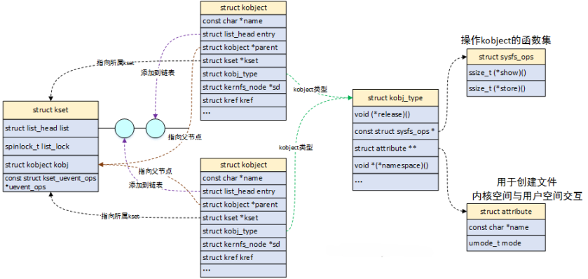
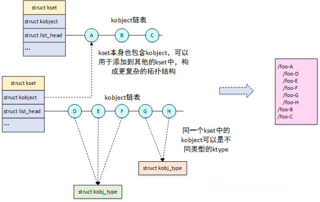

设备模型¶
为了降低硬件设备的多样性带来的驱动开发的复杂度，Linux 引入了设备模型的设计理念，将硬件设备和驱动设备的代码分别抽象出来，二者由总线关联，并且将功能相同的设备归在一起。
根据 Linux 内核的抽象哲学，必定会用各种结构体来表示每个对象：
-
总线(bus)：硬件设备和驱动代码沟通的桥梁
-
设备（device）：挂载在总线的物理设备
-
驱动（driver）：驱动硬件设备的程序
-
类(class)：相似功能的设备集合
内核使用sysfs文件系统将设备和驱动导出到用户空间，用户可以通过访问 /sys 目录下的文件，来查看甚至控制内核的一些设备。
/sys 目录记录了各个设备之间的关系。其中，/sys/bus 目录下的每个子目录都是已经注册的总线类型。每个总线类型下还有两个文件夹—— devices 和 drivers：devices 是该总线类型下的所有设备，以符号链接的形式指向真正的设备（/sys/devices）。而 drivers 是所有注册在这个总线类型上的驱动。

/sys/devices 目录下是全局的设备结构体系，包含了所有注册在各类总线上的物理设备。所有的物理设备以总线拓扑的结构来显示。
/sys/class 目录下按照设备的功能进行分类。比如鼠标的功能是作为人机交互的输入，于是被归类到 /sys/class/input 目录下。
那么"总线-设备-驱动"是如何配合工作的呢？

在总线上挂载了两个链表，分别管理设备模型和驱动模型。当我们向系统注册一个设备时，便会在设备的链表中插入新的设备。在插入的同时总线会执行match()方法对新插入的设备/驱动进行配对。若配对成功则调用probe()方法获取设备资源，在移除设备/驱动时，调用remove()方法。
kobject¶
设备模型的基本元素有三个：
- kobject：sysfs 中的一个目录，表示基本对象。
- ktype：sys 目录下 kobject 文件操作的接口。
- kset：一个特殊的 kobject，用来管理类似的 kobject。
它们之间的关系如下图所示：

kobject 是 Linux 设备模型的基础，是一种抽象的、统一的对硬件设备的描述。它主要提供以下功能：
- 通过 parent 指针，将所有 kobject 以树状结构的形式组合起来。
- 使用引用计数 kref，来记录 kobject 被引用的次数，在计数为0时释放它。
- 代表了 sysfs 中的一个目录，可以被用户查询
内核很少单独创建 kobject 对象，而是将其作为顶层基类，嵌入到其他数据结构中。当 kobject 中的引用计数归零时，释放 kobject 所占用的内存空间。同时通过 ktype 中的release()回调函数，释放内嵌数据结构的内存空间。每一个内嵌 kobject 的数据结构都需要自己实现 ktype 中的回调函数。
kobject 的数据结构如下：
struct kobject {
const char *name;
struct list_head entry;
struct kobject *parent;
struct kset *kset;
struct kobj_type *ktype;
struct kernfs_node *sd;
struct kref kref;
unsigned int state_initialized:1;
unsigned int state_in_sysfs:1;
unsigned int state_add_uevent_sent:1;
unsigned int state_remove_uevent_sent:1;
unsigned int uevent_suppress:1;
};
name：kobject的名称，同时也是sysfs中的目录名称。当kobject添加到内核时，需要根据name注册到sysfs中。
entry：用于将kobject加入到链表中。
parent：指向父kobject的指针，在sysfs中表示上一层的节点。
kset：该kobject所属的kset。
ktype：该kobject所属的类型。
sd：该kobject在sysfs中的对应目录项。
kref：引用计数。
state_initialized：指示该kobject是否已经初始化。
state_in_sysfs：指示该kobject是否已在sysfs中建立目录。
state_add_uevent_sent/state_remove_uevent_sent：记录是否已向用户空间发送add uevent。
uevent_suppress：如果该字段为1，则表示忽略所有上报的uevent事件。
kobject_create_and_add()用来创建 kobject 对象，并添加到 sysfs 中。
ktype¶
ktype 的数据结构如下：
struct kobj_type {
void (*release)(struct kobject *kobj);
const struct sysfs_ops *sysfs_ops;
struct attribute **default_attrs; /* use default_groups instead */
const struct attribute_group **default_groups;
......
};
release：当kobject引用计数归零时调用该析构函数，负责释放kobject的内存。
default_groups：定义了kobject的属性，由struct attritube和struct bin_attribute构成。
属性的定义如下：
操作属性的方法：
struct sysfs_ops {
ssize_t (*show)(struct kobject *kobj, struct attribute *attr, char *buf);
ssize_t (*store)(struct kobject *kobj, struct attribute *attr, const char *buf, size_t count);
};
cat/echo 操作，最终会调用 show/store 方法。
kset¶
kset 可以作为顶层的 kobject，用来管理一组相关的 kobject：
struct kset {
struct list_head list;
spinlock_t list_lock;
struct kobject kobj;
const struct kset_uevent_ops *uevent_ops;
};
list/list_lock：用于保存该kset下所有kobject对象。
kobj：该kset自己的kobject。
uevent_ops：uevent是用户空间的缩写，提供了与用户空间热插拔进行通信的机制。当任何kobject需要上报uevent时，都要调用所属的kset中uevent_ops中的函数。uevent的概念稍后说明。
当设置了 kset 并把它添加到系统中，将在 sysfs 中创建一个目录，子目录中包含该 kset 下所有的 kobject。比如 /sys/bus 就是一个 kset 对象。

kset 既是 kobject 的集合，本身也是一个 kobject，可以添加到其他集合中，从而构建更复杂的拓扑结构。
示例代码：
来源：https://www.cnblogs.com/LoyenWang/p/13334196.html
#include <linux/kernel.h>
#include <linux/module.h>
#include <linux/slab.h>
#include <linux/kobject.h>
//自定义一个结构，包含了struct kobject子结构
struct test_kobj {
int value;
struct kobject kobj;
};
//自定义个属性结构体，包含了struct attribute结构
struct test_kobj_attribute {
struct attribute attr;
ssize_t (*show)(struct test_kobj *obj, struct test_kobj_attribute *attr, char *buf);
ssize_t (*store)(struct test_kobj *obj, struct test_kobj_attribute *attr, const char *buf, size_t count);
};
//声明一个全局结构用于测试
struct test_kobj *obj;
//用于初始化sysfs_ops中的函数指针
static ssize_t test_kobj_attr_show(struct kobject *kobj, struct attribute *attr, char *buf)
{
struct test_kobj_attribute *test_kobj_attr;
ssize_t ret = -EIO;
test_kobj_attr = container_of(attr, struct test_kobj_attribute, attr);
//回调到具体的实现函数
if (test_kobj_attr->show)
ret = test_kobj_attr->show(container_of(kobj, struct test_kobj, kobj), test_kobj_attr, buf);
return ret;
}
//用于初始化sysfs_ops中的函数指针
static ssize_t test_kobj_attr_store(struct kobject *kobj, struct attribute *attr, const char *buf, size_t count)
{
struct test_kobj_attribute *test_kobj_attr;
ssize_t ret = -EIO;
test_kobj_attr = container_of(attr, struct test_kobj_attribute, attr);
//回调到具体的实现函数
if (test_kobj_attr->store)
ret = test_kobj_attr->store(container_of(kobj, struct test_kobj, kobj), test_kobj_attr, buf, count);
return ret;
}
//用于初始化kobj_ktype
const struct sysfs_ops test_kobj_sysfs_ops = {
.show = test_kobj_attr_show,
.store = test_kobj_attr_store,
};
//用于初始化kobj_ktype，最终用于释放kobject
void obj_release(struct kobject *kobj)
{
struct test_kobj *obj = container_of(kobj, struct test_kobj, kobj);
printk(KERN_INFO "test kobject release %s\n", kobject_name(&obj->kobj));
kfree(obj);
}
//定义kobj_ktype，用于指定kobject的类型，初始化的时候使用
static struct kobj_type test_kobj_ktype = {
.release = obj_release,
.sysfs_ops = &test_kobj_sysfs_ops,
};
//show函数的具体实现
ssize_t name_show(struct test_kobj *obj, struct test_kobj_attribute *attr, char *buffer)
{
return sprintf(buffer, "%s\n", kobject_name(&obj->kobj));
}
//show函数的具体实现
ssize_t value_show(struct test_kobj *obj, struct test_kobj_attribute *attr, char *buffer)
{
return sprintf(buffer, "%d\n", obj->value);
}
//store函数的具体实现
ssize_t value_store(struct test_kobj *obj, struct test_kobj_attribute *attr, const char *buffer, size_t size)
{
sscanf(buffer, "%d", &obj->value);
return size;
}
//定义属性，最终注册进sysfs系统
struct test_kobj_attribute name_attribute = __ATTR(name, 0664, name_show, NULL);
struct test_kobj_attribute value_attribute = __ATTR(value, 0664, value_show, value_store);
struct attribute *test_kobj_attrs[] = {
&name_attribute.attr,
&value_attribute.attr,
NULL,
};
//定义组
struct attribute_group test_kobj_group = {
.name = "test_kobj_group",
.attrs = test_kobj_attrs,
};
//模块初始化函数
static int __init test_kobj_init(void)
{
int retval;
printk(KERN_INFO "test_kobj_init\n");
obj = kmalloc(sizeof(struct test_kobj), GFP_KERNEL);
if (!obj) {
return -ENOMEM;
}
obj->value = 1;
memset(&obj->kobj, 0, sizeof(struct kobject));
//添加进sysfs系统
kobject_init_and_add(&obj->kobj, &test_kobj_ktype, NULL, "test_kobj");
//在sys文件夹下创建文件
retval = sysfs_create_files(&obj->kobj, (const struct attribute **)test_kobj_attrs);
if (retval) {
kobject_put(&obj->kobj);
return retval;
}
//在sys文件夹下创建group
retval = sysfs_create_group(&obj->kobj, &test_kobj_group);
if (retval) {
kobject_put(&obj->kobj);
return retval;
}
return 0;
}
//模块清理函数
static void __exit test_kobj_exit(void)
{
printk(KERN_INFO "test_kobj_exit\n");
kobject_del(&obj->kobj);
kobject_put(&obj->kobj);
return;
}
module_init(test_kobj_init);
module_exit(test_kobj_exit);
MODULE_AUTHOR("LoyenWang");
MODULE_LICENSE("GPL");
sysfs¶
sysfs 文件系统是一个处于内存中的虚拟文件系统，它提供了 kobject 对象的层次结构视图。用户查询系统中各种设备的拓扑结构，就像查询文件目录一样简单。还可以通过导出文件的方式，将内核变量提供给用户读取或者写入。
| 目录 | 功能 |
|---|---|
| block | 块设备 |
| bus | 总线 |
| class | 将设备按照功能分类 |
| dev | block和char两个目录，对应部分块设备和字符设备符号链接 |
| devices | 所有设备 |
| firmwares | 固件信息 |
| fs | 文件系统 |
| hypervisor | 空目录 |
| kernel | 内核配置参数 |
| module | 模块信息 |
| power | 电源管理 |
其中最重要的目录是 devices，Linux 系统中所有设备都可以在这个目录下找到。其他目录中的设备其实都是 devices 目录中的符号链接。
sysfs 的核心是把 kobject 对象与目录项（directory entries）关联起来，通过这种方式，我们可以轻松地查看挂载于 /sys 目录下的整个文件系统视图。向 sysfs 中添加 kobject，可以使用kobject_add()和kobject_create_and_add()函数。
我们已经知道 kobject 可以被映射为某个文件目录，仅有如此还不够。因为这样的 sysfs 仅仅只是一棵树，但没有提供实际数据的文件。为了能够读写这棵树，内核提供了attribute和bin_attribute两种属性。
在前面 ktype 的定义中，成员struct attribute_group包含了这两种属性：
struct attribute_group {
const char *name;
struct attribute **attrs;
struct bin_attribute **bin_attrs;
};
attribute和bin_attribute的定义如下：
struct attribute {
const char *name; //属性的名字
umode_t mode; //属性的权限
};
struct bin_attribute {
struct attribute attr;
size_t size;
void *private;
struct address_space *(*f_mapping)(void);
ssize_t (*read)(struct file *, struct kobject *, struct bin_attribute *,
char *, loff_t, size_t);
ssize_t (*write)(struct file *, struct kobject *, struct bin_attribute *,
char *, loff_t, size_t);
int (*mmap)(struct file *, struct kobject *, struct bin_attribute *attr,
struct vm_area_struct *vma);
};
对于默认属性的实现，由 ktype->sysfs_ops 成员描述：
struct sysfs_ops {
ssize_t (*show)(struct kobject *, struct attribute *, char *);
ssize_t (*store)(struct kobject *, struct attribute *, const char *, size_t);
};
当用户空间读取一个属性时，内核会调用show()方法；当写一个属性时，调用store()方法。
struct attribute为普通的attribute，使用该 attribute 生成的 sysfs 文件，只能用字符串的形式读写。而struct bin_attribute在struct attribute的基础上，增加了read()、write()等函数，因此它所生成的 sysfs 文件可以用任何方式读写。
uevent¶
uevent 是 kobject 功能的一部分，用于在 kobject 状态发生改变时，比如添加、移除，通知用户空间。用户空间收到讯息后，做出相应的处理。
该机制通常是用来支持热插拔（hotplug）设备的，例如当U盘插入后，USB 相关的驱动会动态创建用于表示该U盘的 device 结构，并告知用户空间为该U盘动态创建 /dev/ 目录下的设备节点。
uevent 机制比较简单，当设备模型中任何设备有事件需要上报时，都会触发 uevent 提供的接口。uevent 模块可以通过两个途径把事件上报到用户空间：一种是通过kmod模块，另一种是通过netlink通信机制。
uevent 的代码主要位于 kobject.h 和 kobject_uevent.c 两个文件。
kobject_action定义了uevent的类型：
enum kobject_action {
KOBJ_ADD,
KOBJ_REMOVE,
KOBJ_CHANGE,
KOBJ_MOVE,
KOBJ_ONLINE,
KOBJ_OFFLINE,
KOBJ_BIND,
KOBJ_UNBIND,
};
ADD/REMOVE：kobject的添加/移除事件。
CHANGE：kobject状态或者内容发生改变。
MOVE：kobject更改名称或者更改了parent。
ONLINE/OFFLINE：kobject的上线/下线事件
BIND/UNBIND：kobject的绑定/解绑事件
kobj_uevent_env定义了事件上报时的环境变量：
struct kobj_uevent_env {
char *argv[3];
char *envp[UEVENT_NUM_ENVP];
int envp_idx;
char buf[UEVENT_BUFFER_SIZE];
int buflen;
};
argv：指针数组，可以保存命令行参数，最大为3个。
envp：指针数组，用于保存每个环境变量的地址。
envp_idx：访问envp数组的索引。
buf：保存uevent消息的缓冲区
buflen：存储缓冲区的大小
kset_uevent_ops定义了 kset 的 uevent 接口操作：
struct kset_uevent_ops {
int (* const filter)(struct kset *kset, struct kobject *kobj);
const char *(* const name)(struct kset *kset, struct kobject *kobj);
int (* const uevent)(struct kset *kset, struct kobject *kobj, struct kobj_uevent_env *env);
};
filter：当kobject需要上报uevent时，它所属的kset可以通过此接口过滤掉不希望上报的uevent。
name：用于获取kset中kobject的uevent名称，这个名称通常与uevent中的ACTION字段相对应。
uevent：当一个kobject需要上报uevent时，uevent函数会被调用，它可以为uevent添加环境变量。
uevent 的一些操作 API：
int kobject_uevent(struct kobject *kobj, enum kobject_action action);
int kobject_uevent_env(struct kobject *kobj, enum kobject_action action, char *envp[]);
int kobject_synth_uevent(struct kobject *kobj, const char *buf, size_t count);
int add_uevent_var(struct kobj_uevent_env *env, const char *format, ...);
kobject_uevent_env：以envp为环境变量，上报一个指定action的uevent。
kobject_synth_uevent：允许发送一个合成的uevent。
add_uevent_var：以格式化字符串的形式，向uevent添加新的环境变量。
device和device_driver¶
device和device_driver是 Linux 驱动开发的基本概念。驱动开发，其实就是开发指定的软件（driver）以及驱动指定的设备（device）。内核为此定义了两种数据结构，分别是struct device和struct device_driver。在<include/linux/device.h>中可以找到这两个结构体的定义。
内核用struct device结构体来表示一个设备：
struct device {
struct kobject kobj;
struct device *parent;
struct device_private *p;
const char *init_name;
const struct device_type *type;
struct bus_type *bus;
struct device_driver *driver;
void *platform_data;
void *driver_data;
void (*release)(struct device *dev);
};
kobj：连接到内核的设备模型体系中。
parent：设备的父设备，大多数情况下父设备是某种bus或者是host controller。
p：设备的私有数据。
init_name：设备的初始名称。
type：设备的类型。
bus：bus的类型。
driver：对应的驱动程序。
platform_data：设备私有的平台数据。
driver_data：驱动的私有数据。
release：设备卸载时，调用该回调函数。
设备的注册和注销函数是：
内核用struct device_driver来表示驱动程序：
struct device_driver {
const char *name;
struct bus_type *bus;
struct module *owner;
enum probe_type probe_type;
int (*probe) (struct device *dev);
int (*remove) (struct device *dev);
const struct attribute_group **groups;
const struct attribute_group **dev_groups;
struct driver_private *p;
};
probe_type：指定以什么方式执行probe（异步或同步）。
probe/remove：在注册与注销时被调用。
驱动程序的注册和注销函数是：
Linux 设备模型框架体系下开发，主要包括两个步骤：
-
分配一个
struct device类型的变量，填充信息，然后将其注册到内核。 -
分配一个
struct device_driver类型的变量，填充信息，然后将其注册到内核。
内核会在合适的时机，调用struct device_driver中的各类回调函数，从而触发后者设备驱动的执行。而所有的驱动程序逻辑，其实都是由这些回调函数来实现的。
当然，一般情况下，Linux 驱动开发很少直接操作上面两个结构体，因为内核又封装了一层，比如platform_device，封装后的接口更为简单易用。device和device_driver必须挂在在同一个bus之下，名称也必须一样，内核才能完成匹配操作。
如果匹配到了相同名称的device和device_driver，内核就会执行device_driver中的probe()回调函数，该函数是所有driver的入口函数，用来执行诸如硬件设备初始化、字符设备注册、文件操作ops注册等动作（对应remove()函数）。
bus¶
总线是连接处理器和设备之间的通道。为了方便设备模型的实现，系统中的每个设备都需要连接在一个总线上，这个总线可以是内部总线、虚拟总线或者是平台总线。
总线驱动则负责实现总线的各种行为，其管理着两个链表——klist_devices 和 klist_drivers，分别代表该总线下的设备和驱动。当你向总线添加（移除）一个设备（驱动）时，便会在对应的列表上添加（移除）节点，同时对挂载在该总线的驱动以及设备进行匹配，在匹配过程中会忽略掉那些已经有驱动匹配的设备。

驱动绑定设备的时机
-
驱动被注册时（如果设备已经存在）
-
设备被创建时（如果驱动已经注册）
内核用struct bus_type结构体抽象出总线：
struct bus_type {
const char *name;
const char *dev_name;
struct device *dev_root;
const struct attribute_group **bus_groups;
const struct attribute_group **dev_groups;
const struct attribute_group **drv_groups;
int (*match)(struct device *dev, struct device_driver *drv);
int (*uevent)(struct device *dev, struct kobj_uevent_env *env);
int (*probe)(struct device *dev);
int (*remove)(struct device *dev);
struct subsys_private *p;
};
name：该bus的名称，在sysfs中以目录形式存在，比如platform bus表现为/sys/bus/platform。
dev_name：注册到bus的设备名称。
dev_root：根设备。
bus_groups：bus的默认属性。
dev_groups：bus上device的默认属性。
drv_groups：bus上device_driver的默认属性。
match：当属于该bus的device或者device_driver添加到内核时，调用该函数。
uevent：当属于该bus的device，发生添加、移除或者其他动作时，调用该函数。
probe、remove：当属于该bus的device，发生初始化和移除时，调用该函数。
p：保存了bus模块的一些私有数据，设备和驱动的链表就存放在这里。
struct subsys_private结构体的定义如下：
struct subsys_private {
struct kset subsys; //bus顶层目录
struct kset *devices_kset; //该bus下所有设备集合
struct list_head interfaces;
struct mutex mutex;
struct kset *drivers_kset; //该bus下所有驱动集合
struct klist klist_devices;
struct klist klist_drivers;
struct blocking_notifier_head bus_notifier;
unsigned int drivers_autoprobe:1;
struct bus_type *bus;
struct kset glue_dirs;
struct class *class;
};
bus 属性：
struct bus_attribute{
struct attribute attr;
ssize_t (*show)(struct bus_type *bus, char *buf);
ssize_t (*store)(struct bus_type *bus, const char *buf, size_t count);
};
bus 模块的主要功能是：
- bus 的注册和注销
- 处理设备或者驱动的注册与注销
- 实现驱动的
probe()函数 - 管理 bus 下所有的设备和驱动
内核提供了bus_register()函数来注册总线，bus_unregister()函数来注销总线。
当我们成功注册总线时，会在 /sys/bus/ 目录下创建一个新目录，目录名为我们新注册的总线名。bus 目录中包含了当前系统中已经注册了的所有总线，例如 I2C、SPI、platform 等。
class¶
最后一个设备模型概念是 class。class 是一个设备的高级视图，它抽象出了底层的实现细节。驱动程序可以看到固态硬盘或光盘，但是在 class 的层次上，它们都只是磁盘而已。class 允许用户空间使用设备所提供的功能，而不关心设备是如何连接的，以及如何工作的。
几乎所有的 class 都显示在 /sys/class 目录中。比如所有的网络接口都几种在 /sys/class/net 下，输入设备在 /sys/class/input 下，串行设备在 /sys/class/tty 下。
class 的结构体定义如下：
struct class {
const char *name;
const struct attribute_group **class_groups;
const struct attribute_group **dev_groups;
struct kobject *dev_kobj;
int (*dev_uevent)(struct device *dev, struct kobj_uevent_env *env);
char *(*devnode)(struct device *dev, umode_t *mode);
void (*class_release)(struct class *class);
void (*dev_release)(struct device *dev);
struct subsys_private *p;
};
name：class的名称，体现在/sys/class目录下。
class_groups：class属性。
dev_groups：dev属性。
dev_uevent：设备的uevent回调函数。
class_release/dev_release：release回调函数。
p：子系统的私有数据。
对于子系统这里解释一下。/sys/class 和 device_name 之间的那部分目录称为 subsystem。也就是每个 dev 属性文件所在的路径都可表示为 /sys/class/subsystem/device_name/dev。例如，cat /sys/class/tty/tty0/dev会得到 4:0，这里 subsystem 为tty，device_name 为tty0。
在 /sys/class 目录下创建/删除新的条目：